Incrediblecoasters New Years
Six Flags Magic Mountain Knotts Berry Farm
All right. Part 2 of Incrediblecoasters New Years took place at Knotts Berry Farm on New Years Day.
Hey! Take that Christmas Tree down!!! It's not Christmas time anymore!!!
I love the cock!!! It tastes so delicous that I'll be having it for dinner tonight.
Lame!!! Montezooma's Revenge is down for the day!!!!
 First coaster of 2011.
First coaster of 2011.
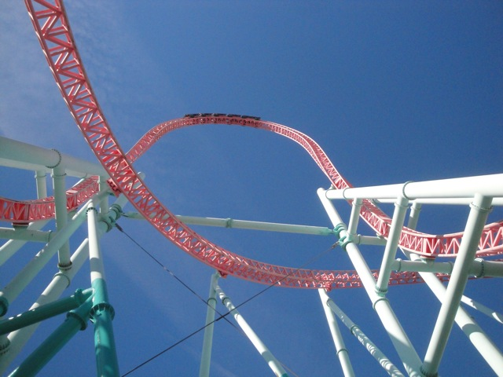
It's been a while since I last rode Xcelerator since it's been a while since my last Knotts visit and on my last visit, Xcelerator was closed due to that damn cable snapping.
 Luckily, Xcelerator was running INSANELY good today. It's a lot better than I remembered.
Luckily, Xcelerator was running INSANELY good today. It's a lot better than I remembered.
Though they do need to finish painting these supports. It's pretty obvious to see where they stopped.
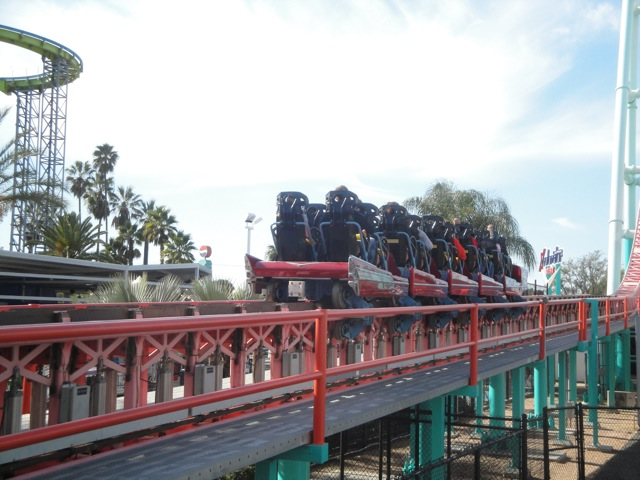
Yeah. Xcelerator's still got the most powerful launch out of any coaster I've ridden.
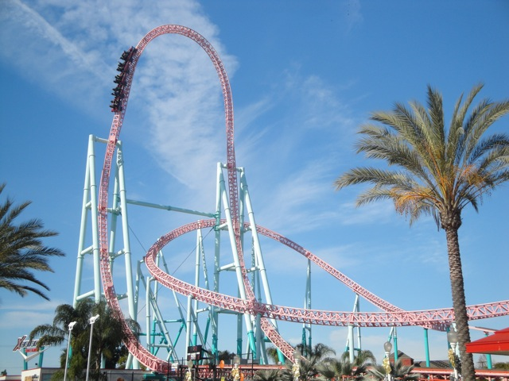
Luckily, thanks to a lack of crowds, we were able to have an Xcelerator Marathon!!! And it was awesome!!! =)
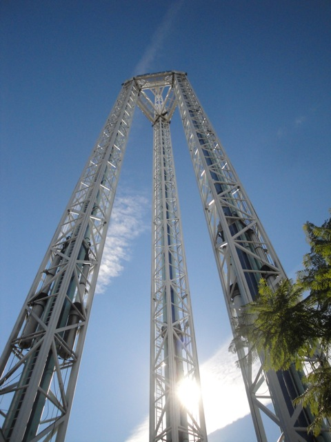
Meh, this is fun. But I want to go back on Xcelerator (Or Drop Zone).
 Suprisingly, Boomerang was actually running decently today.
Suprisingly, Boomerang was actually running decently today.
We grabbed a ride on Riptide since it was there. It's actually got a semi decent Top Spin Program.
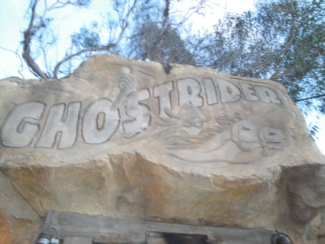
All right!! Ghostrider opened back up!!! Let's see how it's running.
 Good news. Ghostrider was running great!!!!!
Good news. Ghostrider was running great!!!!!
 The bad news. It now completely stops on the turnaround. =( LAME!!!!!!!! But oh well, it was still hauling ass today. From what I heard, it now does this to cut down on maintenence. So, I can understand.
The bad news. It now completely stops on the turnaround. =( LAME!!!!!!!! But oh well, it was still hauling ass today. From what I heard, it now does this to cut down on maintenence. So, I can understand.
Ok, now if there's something about Knotts Berry Farm that I am NOT impressed with. That would be their food prices. They are HORRIBLE!!!! They're bad. Really Bad. Santa Monica Pier's Taco Bell Bad. I know that theme park's are supposed to jack up the prices. But $10.00 to UPGRADE to a combo. You've got to be f*cking kidding me. Lesson learned. Next time at Knotts, walk to the McDonalds nearby.
 All right. Next up, we hit up Silver Bullet.
All right. Next up, we hit up Silver Bullet.
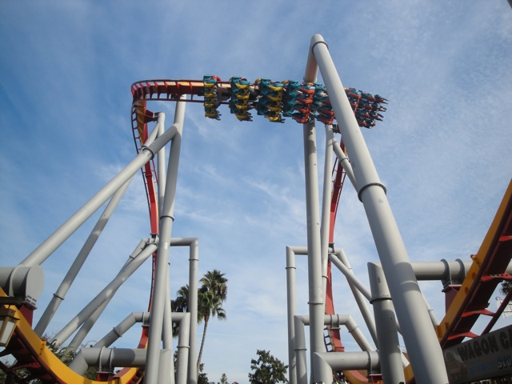
More good news on Silver Bullet. It's getting forceful!!! =)
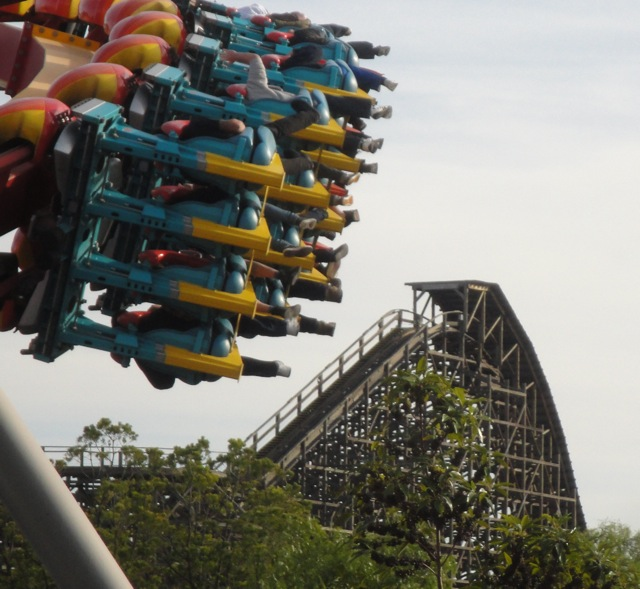
This shot kicks ass.
All right. Halfway through our visit to Knotts, we decided to head on a little credit whoring excursion and headed on over to Adventure City since it was nearby and I needed to get those credits out of the way.
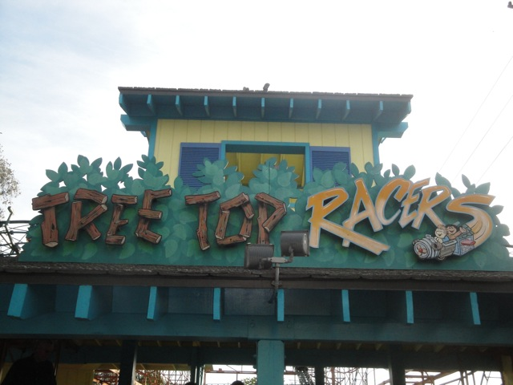
All right. First up, Treetop Racers.
"Hey!!! I think I've been on a ride like this!!! I just don't remember where."
 Lifthill enthusiasts, this is for you.
Lifthill enthusiasts, this is for you.
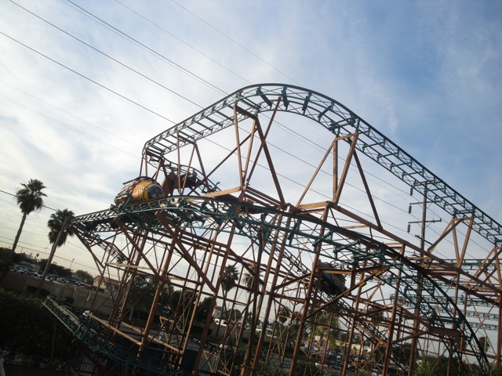
Treetop Racers is actually a decent Wild Mouse. It's better than a certain Wild Mouse a couple miles down the street.
 I'm just suprised that they'd have a ride like this at a kiddy park like Adventure City. (Well, Kids need something bigger than the Freeway Coaster, so never mind.)
I'm just suprised that they'd have a ride like this at a kiddy park like Adventure City. (Well, Kids need something bigger than the Freeway Coaster, so never mind.)
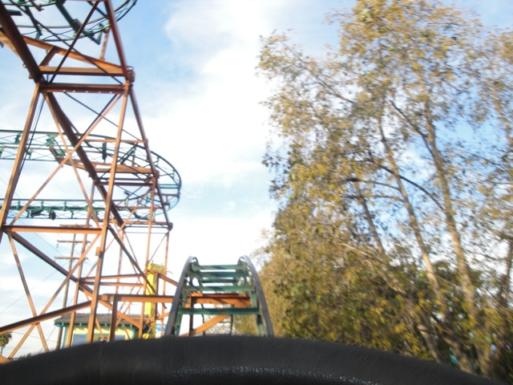
Wee!!! Mild Floater Air!!!
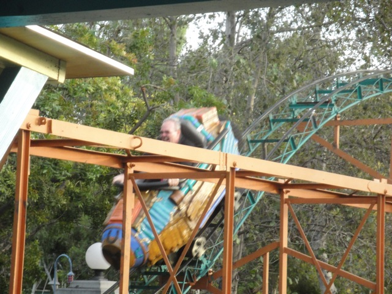
Treetop Racers Goodness,
 While not the greatest ride in the world, I'm just glad that Adventure City saved this ride from being scrap metal after it's time traveling in Australian Fairs and brought it to Adventure City for children, parents and credit whores to all enjoy.
While not the greatest ride in the world, I'm just glad that Adventure City saved this ride from being scrap metal after it's time traveling in Australian Fairs and brought it to Adventure City for children, parents and credit whores to all enjoy.
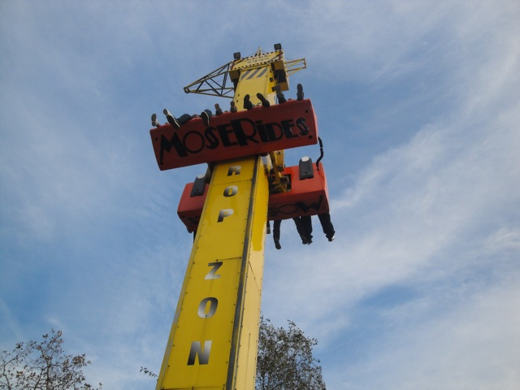
They had a super frog hopper here, so we took a quick ride on that since it was there. And hey, it ran a decent program.
 And now, to get the other credit in the park. The Freeway Coaster.
And now, to get the other credit in the park. The Freeway Coaster.
 Cha Ching. Credit #222.
Cha Ching. Credit #222.
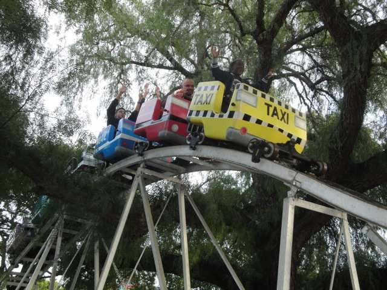
Dude!!! This coaster literally goes through the trees and over that partridge tree branch!!! Now that is cool. =)
Yup. I've become a credit whore.
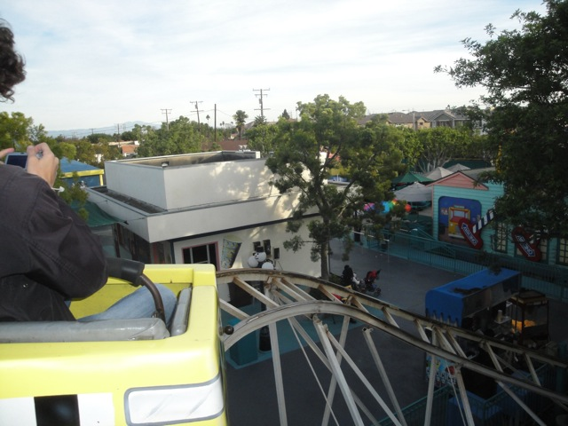
Well, Freeway Coaster was a very interesting kiddy coaster to say the least. It goes through the trees, and feels like it has a bunch of mini power launches.
Well, that's enough Adventure City. Time to head back to Knotts. Will I ever return to Adventure City? Most likely not. But hey, it is a cool place for families and a nice place to go credit whoring for an hour. Plus, they've got a decent wild mouse.
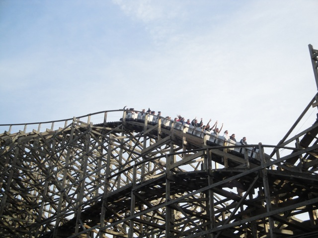
Time to head back to Knotts Berry Farm and get on some real exciting roller coasters.
"How the hell did I get in here?"
Normally we don't watch shows like this when at a theme park, but due to us being able to get on everything at Knotts Berry Farm plus go out on a bonus credit whoring trip, we figured we could give Snoopy on Ice a watch.
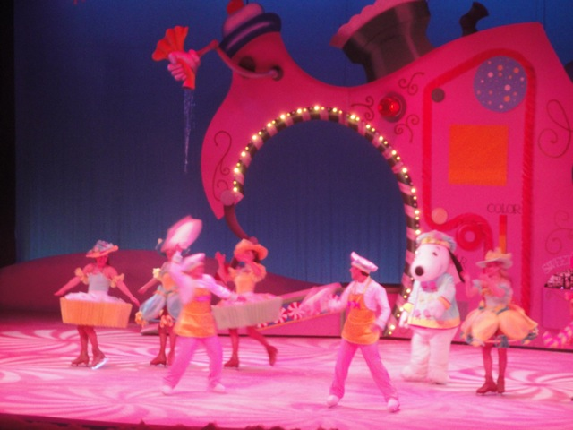
It would've been fine if I had seen it a month ago back when I was in the Christmas Mood. But seeing it on New Years Day just felt awkward and out of place since I'm in the "Reject Christmas!!! It's over til next year folks!!!" mood which didn't help.
We then had dinner at Mrs. Knotts Dinner. (Did you know that my high quality meal at Mrs. Knotts was the exact same price that I paid for that typical amusement park crap I had for lunch? That should say alot.)
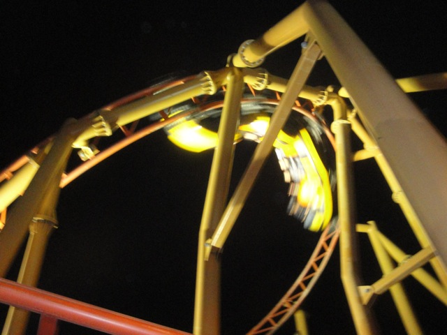
We took a lot of night time rides on many coasters such as Sierra Sidewinder.
But when Xcelerator's line is like this, all you can think is "MARATHON!!!!!"
"JELLY DOUGHNUT!!!!!!!"
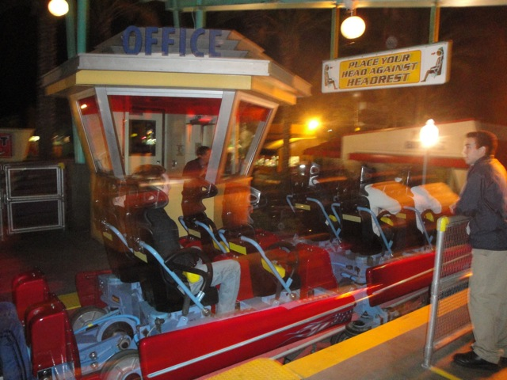
Who cares if it's 40 degrees and cold air is blowing on us. It's Xcelerator and it is freaking awesome!!!
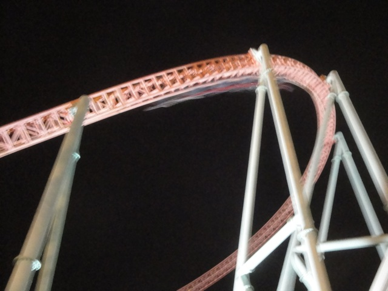
Mmm. Xcelerator at night.
And finally, take a good long look at the Sky Tower before it's torn down so Windseeker can go there. Good bye Knotts. See you this summer when Windseeker opens.
Home